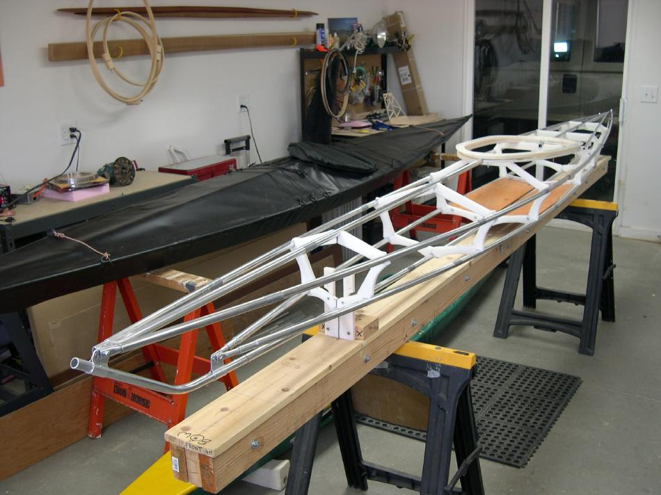

| Sea Otter / Sea Otter - R | Menu Previous Page Next Page |
|
 The Sea Otter-R frame under construction. The Sea Otter is only 15ft (457cm) LOA X 20in (51cm) beam, but due to it's much steeper stems, has a waterline (W/L) approaching that of the 17ft Greenland kayaks. A Sea Ranger is on the left. |
|